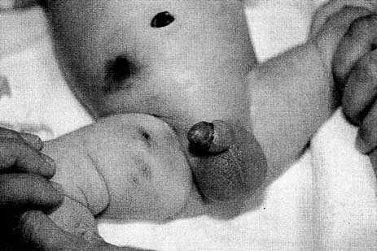

Necrotizing fasciitis after Plastibell circumcision
David P. Bliss, Jr., MD, Patrick J. Healey, MD, and John H. T. Waldhausen, MD
Necrotizing fasciitis is a potentially life-threatening infection of subcutaneous tissues and Scarpa's fascia that rarely affect neonates. We report the occurrence of this devastating infection in two neonates after routine Plastibell circumcision. These case reports highlight the presentation and management of this complication after a relatively routine and frequently performed operation. This report also emphasizes the differences between cellulitis and necrotizing fasciitis and suggests strategies for management. (J Pediatr 1997;131:459-462)
Necrotizing fasciitis is a surgical emergency resulting from infection of the subcutaneous tissue and superficial fascia by a variety of bacteria. In the neonatal age group it may have a mortality rate greater than 70%1 Successful treatment requires accurate diagnosis with early and aggressive debridement of the involved tissue, broad-spectrum intravenous antibiotic coverage, and intensive support care. We report two cases in newborn male infants in whom necrotizing fasciitis developed after Plastibell (Hollister, Libertyville, Ill.) circumcision. These cases illustrate the devastating nature of this type of infection and show how aggressive treatment can lead to a satisfactory outcome.
CASE REPORTS
Case 1
A term, 10-day-old infant was brought to the hospital for evaluation of tenderness and swelling involving his penis, scrotum, and lower abdomen 2 days after he had undergone Plastibell circumcision. The baby was febrile with erythema, edema, and tenderness involving the lower abdomen, genitalia, and perineum. The leukocyte count was 27,000 cells/cm3. He was hospitalized with the diagnosis of cellulitis and received intravenous ampicillin and gentamicin therapy. Despite antibiotic treatment there was little change in his condition during the subsequent 24 hours. The patient was transferred to Children's Hospital and Medical Center (CHMC) the following day because of his worsening clinical course and uncertainty about the diagnosis.
On arrival at CHMC, the baby appeared to be in stable condition hemodynamically. His axillary temperature was 36.0° C with a heart rate of 170 beats/min and a blood pressure of 80/60 mm Hg. An examination revealed induration, erythema, and exquisite tenderness involving the lower abdomen, inner thighs, penis, scrotum, and remainder of the perineum (Fig. 1). Intravenous administration of clindamycin was added to the antibiotic regimen and he was taken immediately to the operating room with the diagnosis of necrotizing fasciitis. Radical debridement of the infected tissues was required, including the skin and Scarpa's fascia of the lower abdominal wall, inferior to the umbilicus, both inguinal areas, the entire scrotum, and skin of the penile shaft to the corona. The glans and corpora were not affected. The dissection left the spermatic cords and testicles exposed, but the tunica vaginalis remained intact (Fig. 2). The wound was treated with wet to dry dressings in the infant ICU. Two additional operative debridements were required to remove all infected tissue. The extent of the resection was guided by presence of tissue edema and the demonstration of polymorphonuclear cell infiltration and necrosis on frozen section examination. Seven hyperbaric oxygen treatments supplemented the surgical debridement. Blood cultures grow coagulase-negative Staphyloccus and tissue cultures yielded Klesiella spp. and coagulase-negative Staphylococcus. The antibiotic regiment was altered to vancomycin, gentamycin and clindamycin and continued for 14 days.
Five days after the final debridement, sterilized pigskin allograft coverage was applied and changed every 3 to 5 days for 2 weeks, when split-thickness grafts were performed. The spermatic cords had become foreshortened with the testes lying atop the abdominal wall at the level of the external inguinal rings. The patient initially did not receive oral food and was maintained by parenteral alimentation because of the concern of fecal contamination of the graft bed. After resuming an enteral diet. The patient was discharged approximately 1 month after admission to CHMC.
|
Fig. 1 The photograph shows the appearance of the scrotum at the time of presentation to CHMC on circumcision day 5. The scrotum is intensely swollen and tender with an area of of full thickness necrosis seen on the right. The erythema, edema, and induration extend onto the anterior abdominal wall, thigh, and the perineum. 
Fig. 2 Patient 1 after final debridement of all involved tissue. The penis has been degloved and the scrotum removed with preservation of the testes. The wound is beginning to granulate. |
Case 2
A term, newborn male infant underwent Plastibell circumcision on day 1 of life and was noted to have a pustule on the scrotum 2 days later. This area became hemorrhagic and the erythema and induration then rapidly spread to the lower abdominal wall (Fig. 3). Because of the concern of the necrotizing soft tissue infection, the child received ampicillin and clindamycin and was transferred to CHMC. On presentation at CHMC, the child was in hemodynamically stable condition, but had a platelet count of only 30,000 cells cm3 and a leukocyte count of 26,700 cells cm3. His heart rate was 120 beats min, blood pressure was 84/48 mm. Hg. and his temperature was 36.1° C. He had induration extending into the inguinal area and medial thigh on the right, with an erythematous swollen scrotum and penile shaft. The circumcision site was swollen with areas of necrosis.
Necrotizing fasciitis was diagnosed and the patient was taken immediately to the operating room where he underwent debridement of the involved tissue. Tissue cultures grew Staphylococcus aureus, Staphylococcus epiderm, and gram negative rods. He was treated with ampicillin, gentamicin and clindamycin for 10 days in the infant ICU. Hyperbaric oxygen therapy was administered four times and the child received split-thickness skin grafts 6 days after the initial surgical debridement. He was discharged from the hospital 14 days after admission.
|

Fig. 3. Patient 2 with erythema and induration around the circumcision site with extension onto the lower abdomen and thigh. |
DISCUSSION
Circumcision has few significant complications.2 Gee and Ansell3 published 10-year review of more than 5500 circumcisions, comparing the Gomco clamp (Allied Health Products, Gomco Division, St. Louis, Mo) with the Plastibell device. They observed that infection was the second most common complication after bleeding. All of these infections responded to the use of topical or intravenous antibiotics and none was diagnosed as necrotizing fasciitis. The reason for the increased rate of infection with the Plastibell device is unclear,3 but may be related to the necrosis and sloughing of tissue required with this type of circumcision.
Necrotizing fasciitis is in the neonate is uncommon and may resemble cellulitis at presentation. The diagnosis of necrotizing fasciitis is often delayed but the infection can be devastating if not treated promptly and appropriately.4 Necrotizing fasciitis of the genitalia (Fournier gangrene) is even more rare. In 1980 Woodside8 described a patient who underwent Plastibell circumcision and experienced necrotizing fasciitis but in the 15 years since that report no other similar complications have been cited in the literature. Since then however various types of necrotizing soft tissue infections have become more commonly recognized in the pediatric age group,9 and it is essential for physicians who perform any type of surgical procedure to be able to recognize this life-threatening infection.
Necrotizing fasciitis and simple cellulitis usually may be differentiated on the basis of clinical signs and symptoms.10,11. Both simple cellulitis and necrotizing fasciitis may present with erythema and induration; however, any surgical wound occurring with these symptoms should be evaluated carefully for evidence of necrotizing soft tissue infection. Changes to the soft tissues such as edema, skin blistering, or frank necrosis are late changes. The proper diagnosis should be suspected and often recognized before these findings. The pain caused by necrotizing fasciitis is very severe, out of proportion to the apparent physical findings. Although it is not specific, tachycardia is a sensitive indicator and should prompt an urgent evaluation for necrotizing soft tissue infection.
An elevated leukocyte count may be noted in both necrotizing fasciitis and simple cellulitis. In a larger study of 18 patients with necrotizing fasciitis caused by chickenpox, we determined that an elevated band count of greater than 5% is a more specific indicator of necrotizing fasciitis.11 Any patient who has wound erethema, induration, and pain in conjunction with tachycardia and an elevated leukocyte or band count should have immediate surgical evaluation because of the possibility of necrotizing fasciitis and the need for operative debridement.11
The treatment for necrotizing fasciitis must include broad-spectrum antibiotic coverage and surgical debridement. Because these patients may become extremely ill, they frequently require ICU care. Broad spectrum antibiotics because necrotizing fasciitis is often a mixed infection, as illustrated by these case reports in which tissue cultures grow both gram-positive and gram-negative organisms. The initial therapeutic plan generally should presume involvement of a mixed infection and the antibiotic coverage should include coverage for gram-positive, gram-negative, and anaerobic organisms. We have chosen to treat patients with suspected or confirmed necrotizing fasciitis with an aminoglycoside for gram-negative coverage. Clindamycin is used for anaerobic coverage because in addition to its anaerobic spectrum, it has additive benefits in the coverage of group A Streptococcus, which in the past decade has become a more prevalent cause of necrotizing soft tissue infections.12
Once the diagnosis of necrotizing fasciitis is suspected, a surgical evaluation should be obtained and surgical exploration performed. If operative evidence of necrotizing fasciitis exists, immediate surgical debridement of all involved tissue is required. Postoperatively, these patients should be monitored for possible extension of disease and the need for further debridement. In cases that are not clear, close and frequent reexamination of the wound is needed. Frozen section biopsy at the bedside or in the operating theater may be used for a diagnostic adjunct.13 The efficacy of hyperbaric oxygen therapy is uncertain. Aggressive surgical debridement and intensive ICU support may afford survival in these patients, although the mortality rate in the neonatal age group remains high. Early diagnosis and rapid, aggressive treatment are keys to a successful outcome.
REFERENCES
- Sawin RS, Schaller RT Jr, Tapper D, Morgan A, Cahill J, et al. Early recognition of neonatal abdominal wall necrotizing fasciitis. Am J Surg 1994; 167:481-4.
- Shulman J, Ben-Hur N, Neuman Z. Surgical complications of circumcision. Arch Pediatr Adolesc Med [Am J Dis Child] 1964; 107:149-54.
- Gee WF, Ansell JS. Neonatal circumcision: a ten-year overview with comparison of the Gomco clamp and the Plastibell device. Pediatrics 1976;58:824-7.
- Weinberger M, Haynes RE, Morse RS, Necrotizing fasciitis in a neonate. Arch Pediatr Adolesc Med [Am J Dis Child] 1972; 123:591-3.
- Wilson HD, Haltahn KC. Acute necrotizing fasciitis in childhood: report of eleven cases. Arch Pediatr Adolesc Med [Am J Dis Child] 1973;125:591-5.
- Ramamurthy RS, Srinvasan G, Jacobs NM. Necrotizing fasciitis and necrotizing cellulitis due to group B streptococcus. Arch Pediatr Adolesc Med [Am J Dis Child] 1977;131:1169-70.
- Adams JR, Jr, Culkin DJ, Mata JA, Bocchim JA Jr, Venable DD. Fournier's gangrene in children. Urology 1990;5:439-41.
- Woodside JR. Necrotizing fasciitis after neonatal circumcision. Arch Pediatr Adolesc Med [Am J Dis Child] 1980;34: 301-2.
- Stevens DL. Invasive group A streptococcal infections: the past, present and future. Pediatr Infect Dis J 1994; 13:561-6.
- Brogan TV, Nizet V, Waldhausen JH, Clarke W, et al. Group A Streptococcal necrotizing fasciitis complicating primary varicella: a series of fourteen patients. Pediatr Infect Dis J 1995;14:588-94.
- Waldhausen JHT, Holterman MJ, Sawin RS. Surgical implications of necrotizing fasciitis in children with chicken pox. J Pediatr Surg 1996;31:1138-41.
- Stevens DL, Gibbons AE, Bergstrom R, Winn V. The Eagle Effect revisited: efficacy of clindamycin, erythromycin and penicillin in the treatment of streptococcal myositis. J Infect Dis 1988; 158:23-8.
- Stamenkovic I, Lew PD. Early recognition of potentially fatal necrotizing fasciitis: the use of frozen tissue biopsy. N Engl J Med 1984; 310:1689-93. [Abstract]
From the Division of Pediatric Surgery, Children's Hospital and Medical Center, University of Washington, Seattle.
Submitted for publication September 4, 1996; accepted Dec. 17, 1996.
Reprint requests: John H. T. Waldhausen, MD. Department of Surgery, Children's Hospital and Medical Center, 4800 Sand Point Way N. E., P.O. Box 5371, Seattle, WA 98105-0371.
Copyright © 1997 by Mosby-Year Book, Inc.